Our Memories
Every picture holds a thousand feelings
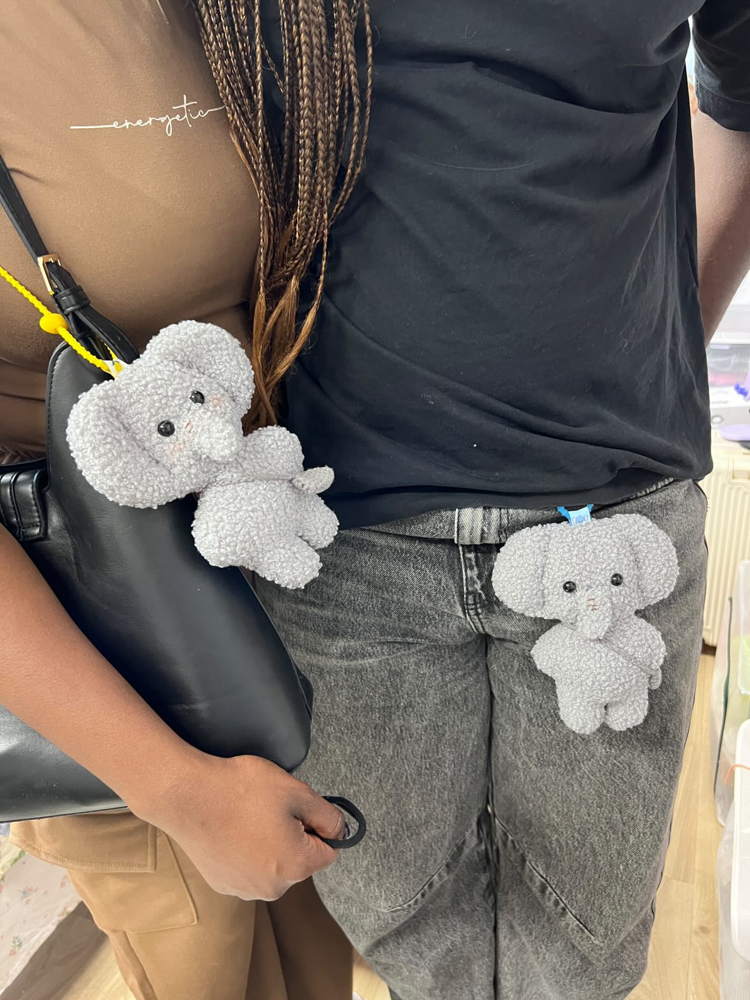
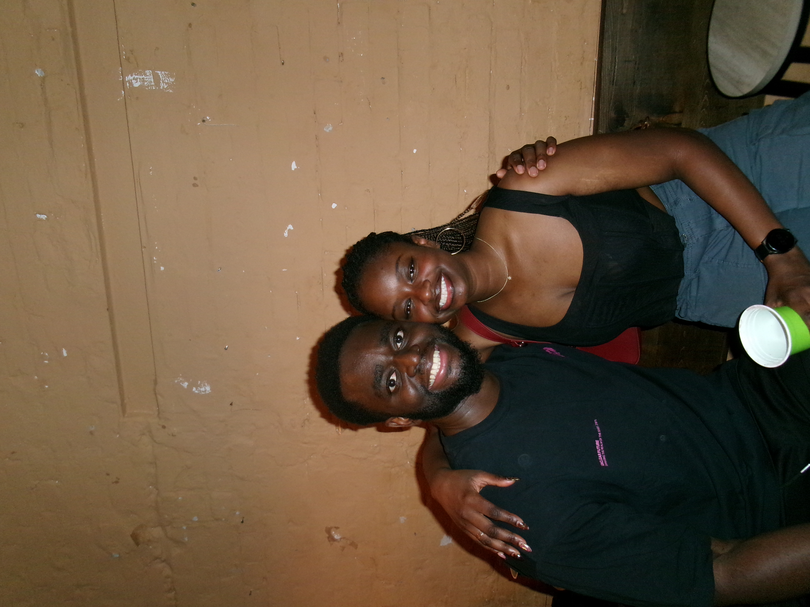
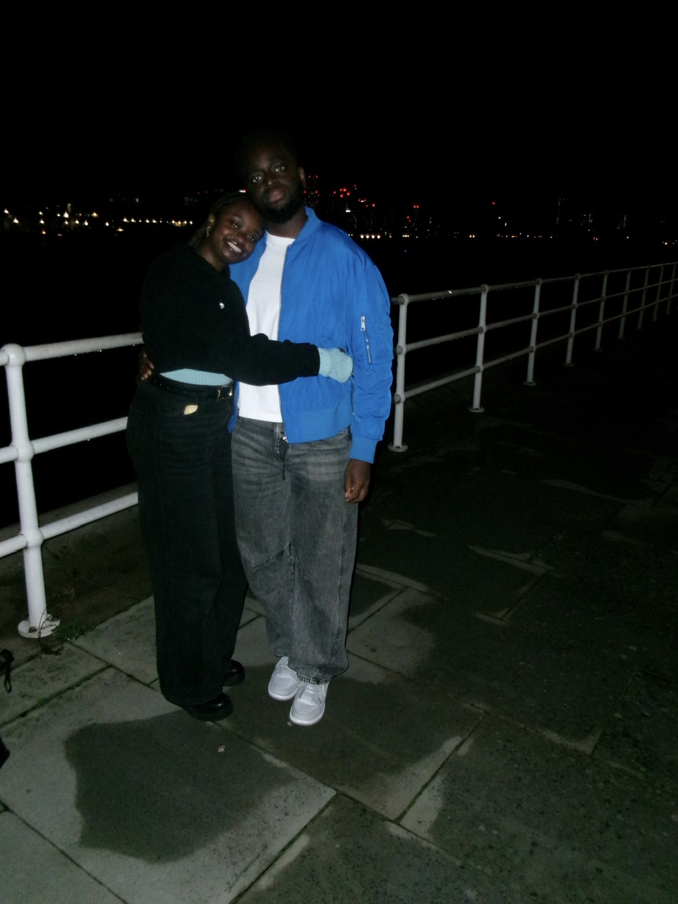
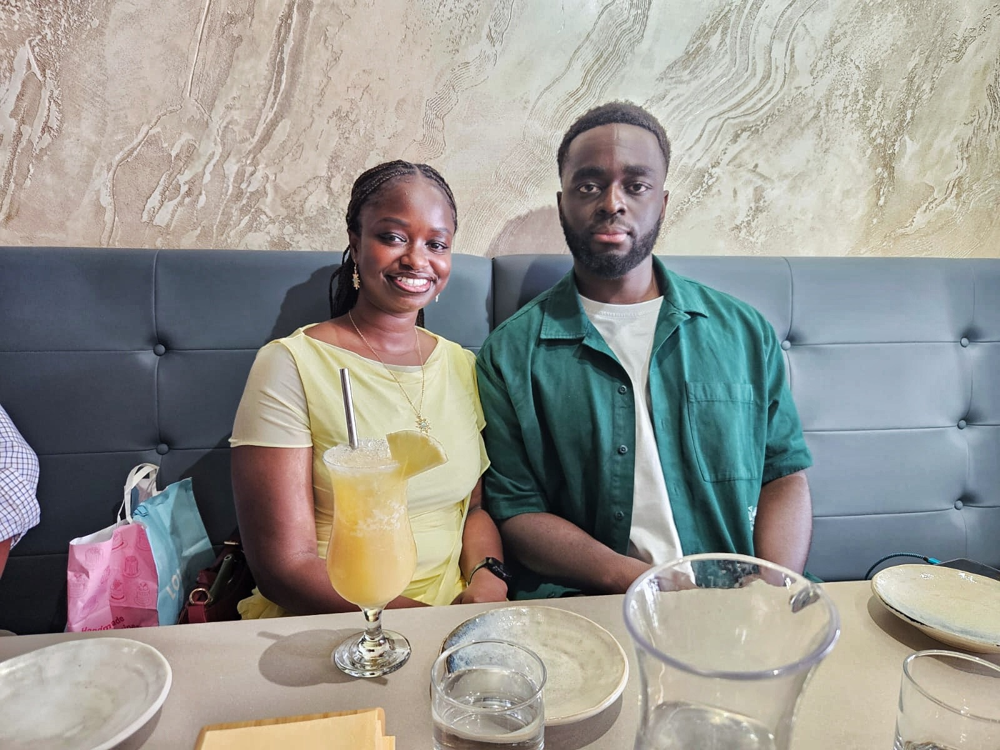
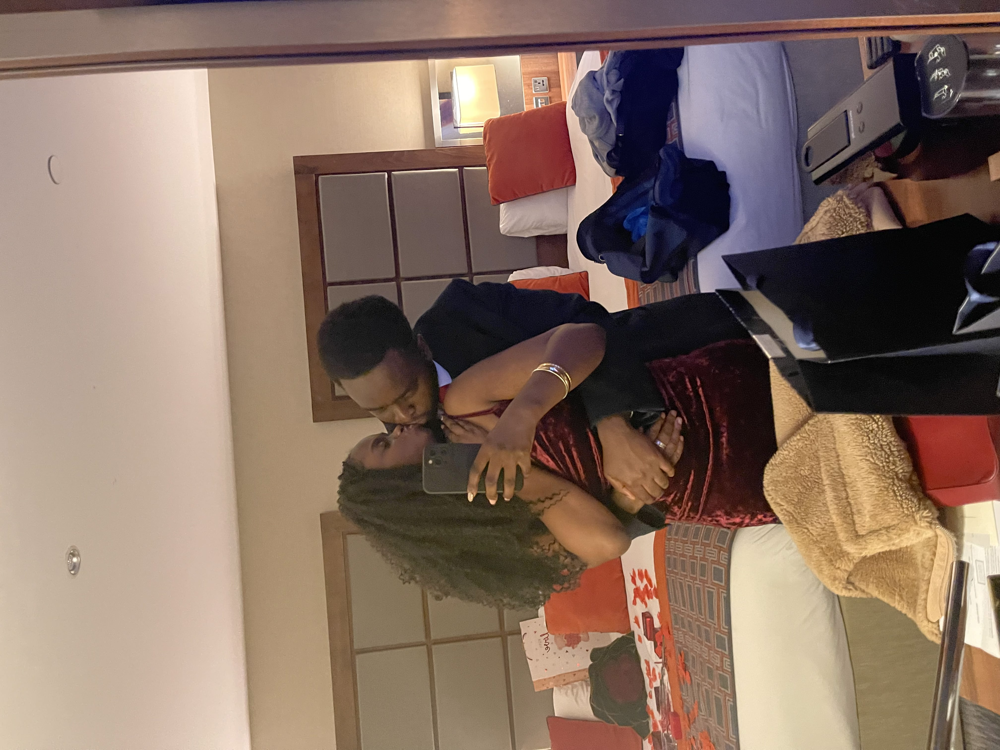
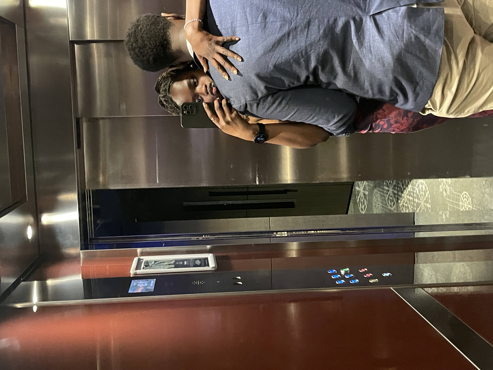
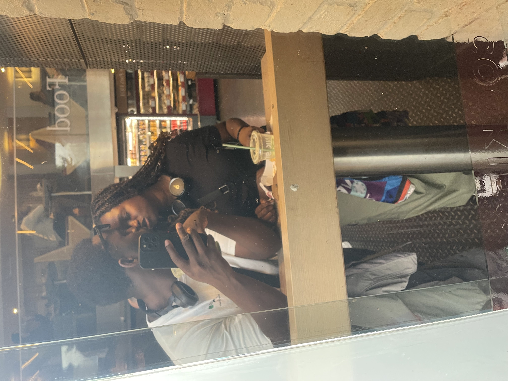
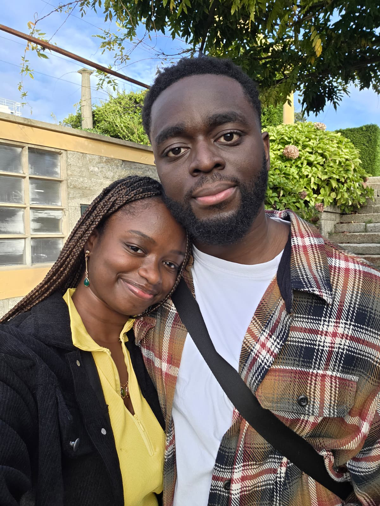
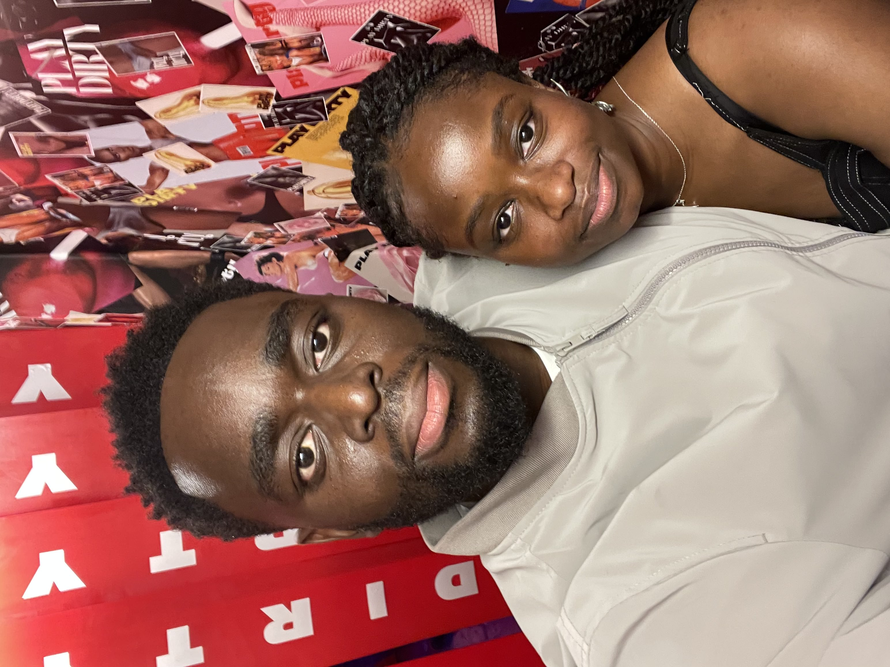
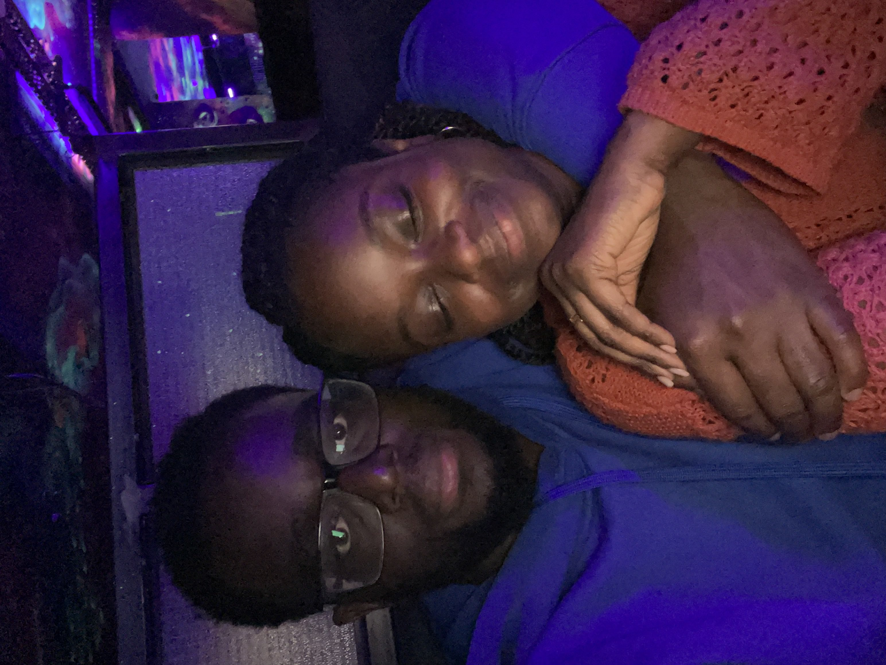
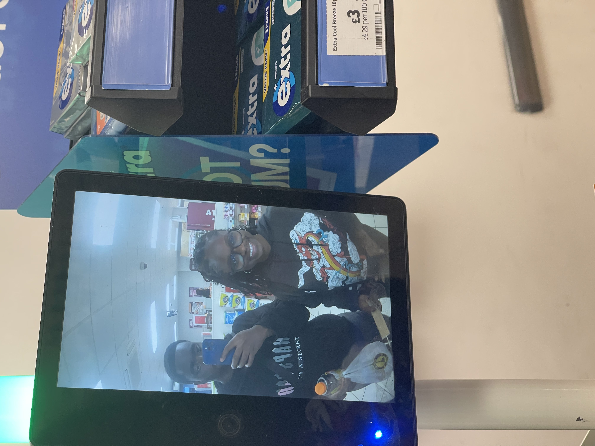
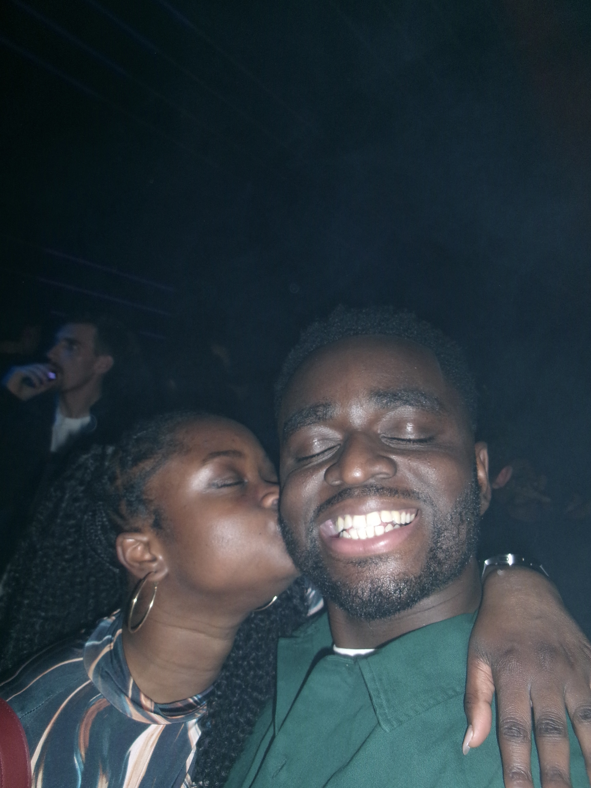
Words Written for You
From my heart, into yours
Poem I
Presence
Sometimes I think the wind carries her name further than I ever could. The sun does more justice to exalt her coating in chocolate and rose gold. I hear it across the plains of long grass at night with the softness of chanters from the tree. The gleaming of rays of our yellow star reminds me of her ever-present and that there's no trail long enough to leave the heart behind.
Poem II
Persona
Gentle, noble, and warm in spirit—
How remarkable it is that one soul,
so full of light, can walk this earth in material form.
Your personality is tranquil, yet it reverberates—
curious, kind, and resilient,
a harmony of warmth and wonder
that wraps itself around the moment.
You are spirit, that is whose passions and Enthusiasm cannot be contained. I love seeing that freedom in action
That laugh, that giggle —
It echoes in my mind like a choir through cathedral walls,
Agia in each note a symbol, each smile a stanza.
It lingers, elevates, consoles.
There's always a beam
when I name your gifts aloud—
Your dimples communicate a novel of excitement
And in that gaze, I see the girl, the woman, the future.
You were never just your beauty.
But like incense and its white flame
Your character that caught me.
It was the soul that imparted hope into me.
Even in fleeting moments,
you illuminate—
like a sun rising from the west,
setting where it shouldn't,
defying direction, rewriting the sky.
And for that,
I give thanks.
How remarkable it is that one soul,
so full of light, can walk this earth in material form.
Your personality is tranquil, yet it reverberates—
curious, kind, and resilient,
a harmony of warmth and wonder
that wraps itself around the moment.
You are spirit, that is whose passions and Enthusiasm cannot be contained. I love seeing that freedom in action
That laugh, that giggle —
It echoes in my mind like a choir through cathedral walls,
Agia in each note a symbol, each smile a stanza.
It lingers, elevates, consoles.
There's always a beam
when I name your gifts aloud—
Your dimples communicate a novel of excitement
And in that gaze, I see the girl, the woman, the future.
You were never just your beauty.
But like incense and its white flame
Your character that caught me.
It was the soul that imparted hope into me.
Even in fleeting moments,
you illuminate—
like a sun rising from the west,
setting where it shouldn't,
defying direction, rewriting the sky.
And for that,
I give thanks.
Poem III
Desire
Cloaked in ebony, with polished eyes of obsidian. And dressed in melenin. And Graced in velvet.
All capture the mind. Vivid and exquisite. For that is the anatomy of art.
The presence is like a raven flying against the mavros-coated sky, gliding like ink
Yet distance sharpens the flame, as shadow deepens light. The absence binds stronger than touch,
a gravity unseen, drawing soul to soul
All capture the mind. Vivid and exquisite. For that is the anatomy of art.
The presence is like a raven flying against the mavros-coated sky, gliding like ink
Yet distance sharpens the flame, as shadow deepens light. The absence binds stronger than touch,
a gravity unseen, drawing soul to soul
Poem IV
Contagion of a Smile
From the first, when eyes beheld you,
Soft in dusk's embracing hue—
Came a smile, divine, eternal,
Warming all it wandered through.
Curved on lips like wine and honey,
Dripped in tones no words could do,
Lit a blaze within my spirit,
Love made flesh and flowing true.
Like the sun upon my winter,
Like a breath I never knew,
Touched me like the flight of doves do,
Bathed my soul in fire's hue.
Gentle lips, all joy encompassing,
Pulled me close, as oceans do—
Where your smile began its blooming,
So my world was made anew.
Now, wherever shadows linger,
You arrive, and I pursue.
Not with hands, but heart and marrow—
Not with eyes, but something through
Every sense that sings your presence,
Every ache that once withdrew—
You have won a thing eternal,
With a smile that ever grew.
Soft in dusk's embracing hue—
Came a smile, divine, eternal,
Warming all it wandered through.
Curved on lips like wine and honey,
Dripped in tones no words could do,
Lit a blaze within my spirit,
Love made flesh and flowing true.
Like the sun upon my winter,
Like a breath I never knew,
Touched me like the flight of doves do,
Bathed my soul in fire's hue.
Gentle lips, all joy encompassing,
Pulled me close, as oceans do—
Where your smile began its blooming,
So my world was made anew.
Now, wherever shadows linger,
You arrive, and I pursue.
Not with hands, but heart and marrow—
Not with eyes, but something through
Every sense that sings your presence,
Every ache that once withdrew—
You have won a thing eternal,
With a smile that ever grew.
Poem V
Hours
The clock struck twenty past five.
I carried her cream jacket; she wore my blue bomber.
My eyes, heavy with the day, yet hers sought mine.
She rested upon my shoulder,
Eyes rubbing away the weight of the world,
Finding refuge, recognition, a quiet home.
In the turn of a glance,
her head found its place—
soft, almost surrendering,
yet certain,
that within this small fortress,
she was shielded, cradled, and safe.
She stirred, awakening to the movement of the train.
Her nails, midnight violet, traced paths through my beard,
an exploration gentle, intimate, unspoken.
We smiled, teeth full,
laughter carried in the sway of the car,
a simple testament to the closeness we bore.
Here, in this brief eternity,
the world is silent,
and yet entirely alive—
a rhythm of breaths and glances,
an offering of safety and trust,
and the quiet sacrament of us.
I carried her cream jacket; she wore my blue bomber.
My eyes, heavy with the day, yet hers sought mine.
She rested upon my shoulder,
Eyes rubbing away the weight of the world,
Finding refuge, recognition, a quiet home.
In the turn of a glance,
her head found its place—
soft, almost surrendering,
yet certain,
that within this small fortress,
she was shielded, cradled, and safe.
She stirred, awakening to the movement of the train.
Her nails, midnight violet, traced paths through my beard,
an exploration gentle, intimate, unspoken.
We smiled, teeth full,
laughter carried in the sway of the car,
a simple testament to the closeness we bore.
Here, in this brief eternity,
the world is silent,
and yet entirely alive—
a rhythm of breaths and glances,
an offering of safety and trust,
and the quiet sacrament of us.
Poem VI
A Token of Affection
My dearest,
This delicate gold bracelet, with its gentle vine of pink and violet stones, now graces your wrist.
Like our love, it is elegant, enduring, and born of quiet beauty.
May it remind you every day of how deeply you are cherished.
With all my affection
This delicate gold bracelet, with its gentle vine of pink and violet stones, now graces your wrist.
Like our love, it is elegant, enduring, and born of quiet beauty.
May it remind you every day of how deeply you are cherished.
With all my affection
Poem VII
The Geometry and Leap of Certainty
The London air carried an unusual sting,
as if winter refused to yield.
While the calendar whispered of summer,
and the clocks prepared to leap forward—
threatening to steal an hour from the night—
time itself felt touched by frost,
dancing at the very edge of my eyes.
Behind us lay the warmth of clean wooden lines,
and the deep, blue rhythm of the jazz.
Under the stage lights, a streak of deep crimson
parted her dark hair, a quiet spark in the dark.
But out on the pavement, she murmured she was cold.
Her large tan jacket, turned up in pose and posture,
seemed to elevate her into the music of time itself.
I reached forward,
fastening the tighter button of her coat,
looping the double laces against the chill,
before pulling her into an embrace to say goodbye.
And I think, in that sudden quiet.
Only certainty remained.
as if winter refused to yield.
While the calendar whispered of summer,
and the clocks prepared to leap forward—
threatening to steal an hour from the night—
time itself felt touched by frost,
dancing at the very edge of my eyes.
Behind us lay the warmth of clean wooden lines,
and the deep, blue rhythm of the jazz.
Under the stage lights, a streak of deep crimson
parted her dark hair, a quiet spark in the dark.
But out on the pavement, she murmured she was cold.
Her large tan jacket, turned up in pose and posture,
seemed to elevate her into the music of time itself.
I reached forward,
fastening the tighter button of her coat,
looping the double laces against the chill,
before pulling her into an embrace to say goodbye.
And I think, in that sudden quiet.
Only certainty remained.
Poem VIII
Impression
Searching beneath what is known, uncovering the edges of presence, tracing the curves with my fingertips, creating a slow impression with each deliberate touch with gentle glides like spice. With each impression, a map formed in memory through action and suggestion.
How We Found Each Other
Written from my perspective